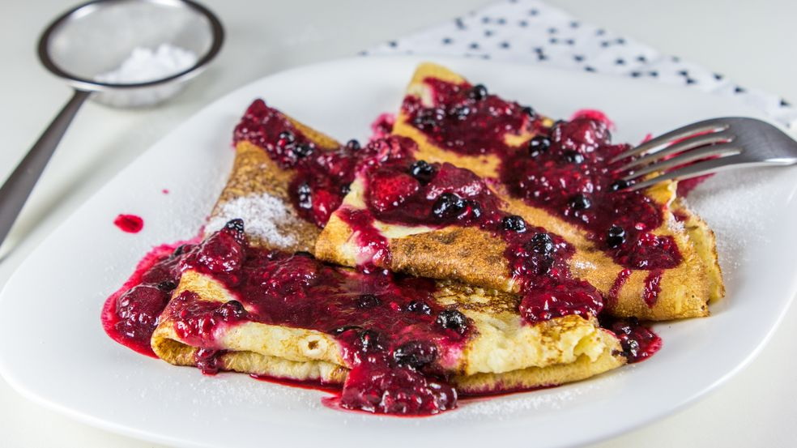

Palacinky s malinami

Popis
Vynikajúci sladko-kyslý sirup s kúskami ovocia rozliaty na krehkých
maslových palacinkách. Takto nejak musí chutiť kúsok neba.
Cesto
- 2 hrnčeky plnotučné mlieko
- 1 hrnček hladká múka
- 2 ks vajce
- 1 PL vanilkový cukor
- 1 štipka soľ
Sirup
- 150 g maliny
- 100 g čierne ríbezle
- 5 PL cukor kryštálový
- 1 KL citrónová šťava
- 1 KL vanilkový extrakt
- olej
- maslo
- práškový cukor
Postup
-
Vajcia rozšľaháme v mlieku, pridáme múku, cukor a soľ. Vymiešame riedke
cesto a na panvici, s rozpáleným maslom a kvapkou oleja pečieme tenké
palacinky.
-
Na sirup vložíme do hrnca ovocie, pridáme citrónovú šťavu, cukor,
extrakt a trochu vody (1 dcl). Privedieme k varu a keď sa začnú maliny
rozpadávať a ríbezle praskať, odstavíme.
-
Palacinky preložíme na štvrtiny, prelejeme horúcim sirupom a poprášime
práškovým cukrom. Ešte lepšie budú s kopčekom vanilkovej zmrzliny alebo
čerstvou šľahačkou.